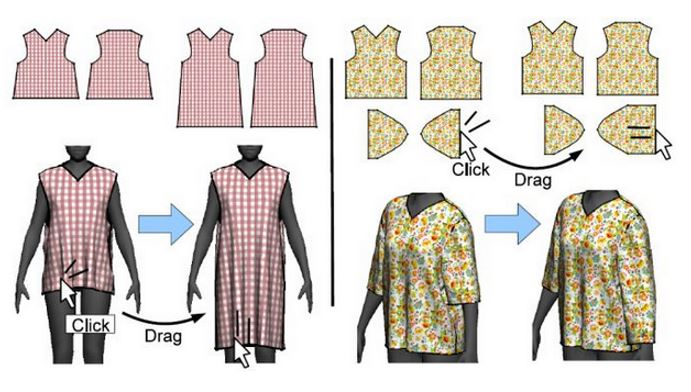
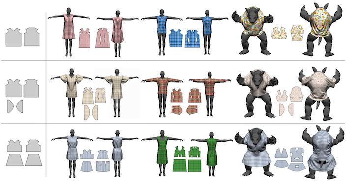
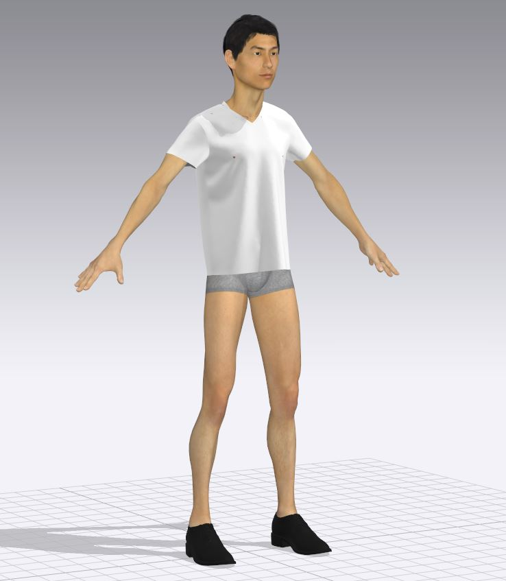
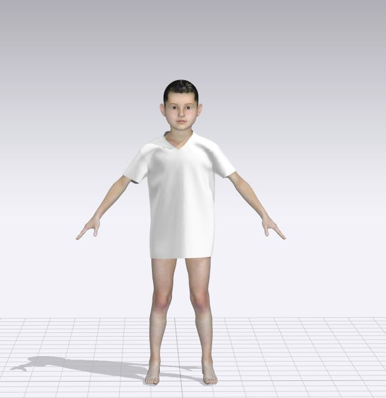
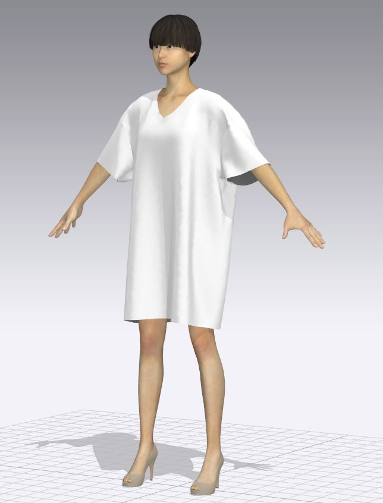
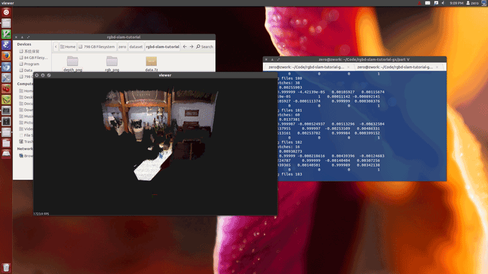
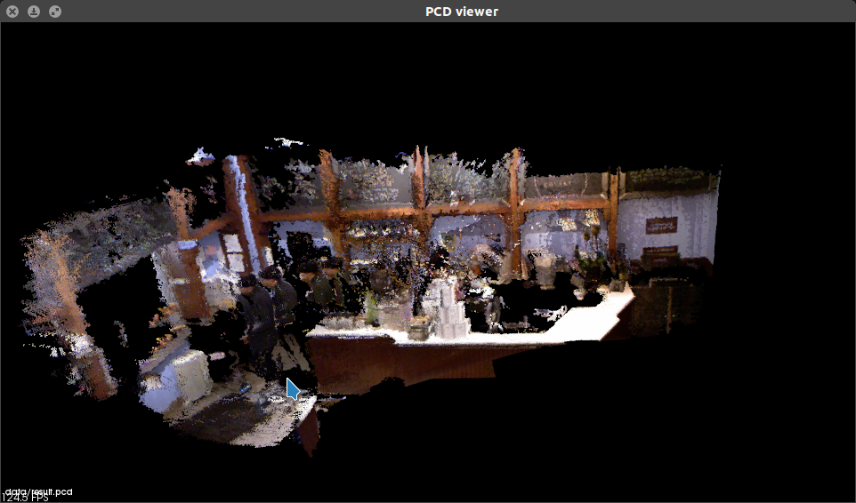
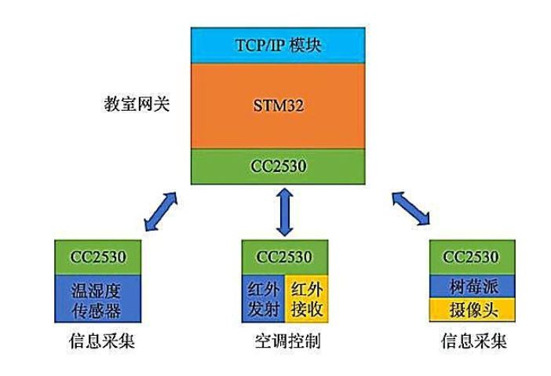
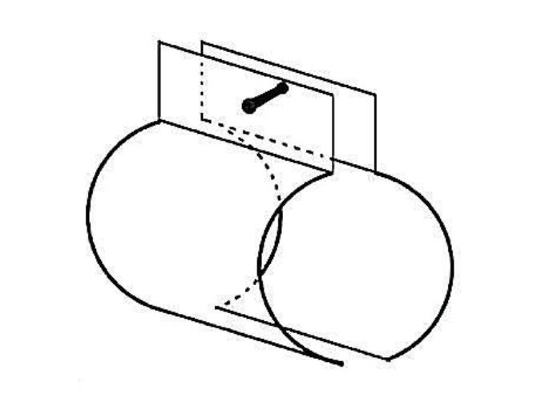

|
Hao FangFirst Year M.Phil studentSupervisor: Prof. Sidan Du Vision and Sensor Graphic (VISG) zutterhao gmail.com Curriculum Vitae Github  Kaggle
Blog Kaggle
Blog
|
About Me
I am currently a fisr year M.Phil. in Vision and Sensor Graphic Group at Nanjing University, advised by Prof. Sidan Du. Previously, I received my B.Eng.'s degree in Nanjing University in 2018.In the same year,I was admitted to study for a M.Sc.'s degree without entrance examination in Vision and Sensor Graphic Group. My research interests are in Computer Vision and Computer Graphics.Education
Nanjing University, Nanjing, Jiangsu, China (Sep 2018 - March 2021)
- Master of Science(M.Sc.) Electronic Science and Engineering
- Major Orientation: Computer Vision and Computer Graphics
Nanjing University, Nanjing, Jiangsu, China (Sep 2014 - March 2018)
- Bachelor of Engineering(B.Eng.) Communication Engineering
- Overall performance ranked: 8/66 Academic Performance: 4.51/5.0
Research Experience
Vision and Sensor Graphic Group, Nanjing University (May 2018 - Nov 2019)
- Supervisor : Prof.Yu Zhou and Prof.Yao Yu
- Research Projects:
- Direct 3D Garment Editing
- Constructed a direct 3D garment editing pipeline: import garment 2D patterns from DXF files and automatically simulate on a virtual model, users can edit garments directly in 3D without the need for garment design experience.
- Real-Time Virtual Fitting System
- Built a real-time virtual fitting system, using a single image to reconstruct human body model and face model, and using physical simulation engine to display dressing effect.
- Indoor High Precision 3D Map Construction
- Automatically constructing indoor three-dimensional maps using robots with binocular cameras.







Project Experience
Huawei Technology Co., Ltd. Nanjing Research Institute (Jun 2017 - Sep 2017)
- Department : VAS Products,Operator Network Business Group
- Position : C++ Development Engineer
- Works : Participated in the development of network applications and charging platform systems of telecommunications operators and be responsible for database management.
National Innovation Training Program (Jan 2016 - Dec 2016)
- Advisor : Zhijian Zhang (Senior Engineer)
- Position : Project Leader
- Training Project : Classroom Management System Based on Internet of Things
- We developed an intelligent classroom management system based on Internet of Things,the system can automatically detect the number of students in the classroom, and then automatically adjust the electrical status of the classroom to save energy.
Teaching Experience
- Head TA Interdisciplinary Application of Internet of Things Technology Fall2018 Nanjing University
- Head TA Knowledge of Intelligent Hardware and DIY Fall2018 Nanjing University
OpenCourse Learning
- DeepLearning.ai(Course Page)
- Neural Networks and Deep Learning
- Improving Deep Neural Networks
- Structuring Machine Learning Projects
- Convolutional Neural Networks
- Sequence Models
- Stanford University
- CS229 Machine Learning
- CS231n Convolutional Neural Networks for Visual Recognition
Publications
|
 |
Hao Fang,Zhijian Zhang,Jianjun Zhuang,Qin Gao,Zhongqin Ge.
Design of energy-saving management system for college self-study classroom based on internet of things Research and Exploration in Laboratory[J],2018,37(10):262-265 [ Paper] |
|
 |
Hao Fang,Zhijian Zhang, Jianjun Zhuang, Dunhuang Chen, Qin Gao.
Study on the internal blockage of non-metallic pipes by capacitance method Experimental Technology and Management[J],2017,34(07):66-68. [ Paper] |
Patterns
-
Pattern Number : CN106090627A
- Drainage pipe plugging detection method and device based on capacitance method.
-
Pattern Number :
CN108014446A
- Smart children's puzzle tabs
Scholarships
- Nov 2018 Study Scholarship (Top 10%)
- Oct 2017 Zheng Gang's Elite Scholarship (Top 5%)
- Dec 2014 & Dec 2015 & Dec 2016 People's Scholarship (Top 20%, three-year continuous)
Honors and Awards
- Jun 2018 Excellent graduates of Nanjing University (Top 15%)
- Sep 2018Chinese Postgraduate Mathematical Modeling Competition (Third Award)
- Nov 2017 Nanjing University First Challenge Cup Pre-competition (First Prize)
- June 2017 National University Internet of Things Design Competition(East China,Second Award)
- Nov 2016 Jiangsu Provincial Annual Conference on Innovation and Entrepreneurship(Most Potential Creative Award)
- May 2016 Excellent student of Nanjing University(Top 20%)
- Apr 2016 Successful Participant in 2016 Interdisciplinary Contest in Modeling (ICM, Global top 50%)
- Apr 2015 Third Extracurricular Academic Works Exhibition of Nanjing University(First Award)
This page has been visited for
 times
times